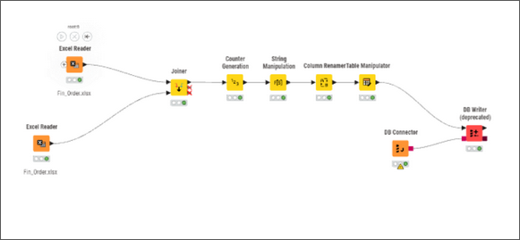
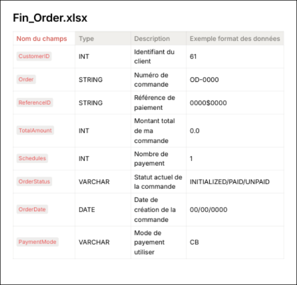

Intégration de données dans un datawarehouse
Conception et alimentation d'un entrepôt de données à partir de sources hétérogènes, en mobilisant des outils ETL no-code / low-code - du schéma en étoile jusqu'au chargement en base relationnelle.
Contexte & objectifs
Cette SAE couvre la compétence Traiter dans sa dimension la plus technique : construire une architecture de données pérenne à partir de sources brutes hétérogènes. L'enjeu central était de concevoir un schéma relationnel en étoile cohérent, puis d'automatiser l'alimentation de ce schéma via des flux ETL reproductibles.
La qualité des données - détection de doublons, normalisation, valeurs manquantes - était un critère d'évaluation à part entière.
- Modéliser un schéma en étoile (table de faits + dimensions) adapté au cas d'usage
- Développer des flux ETL dans Knime : extraction, transformation, chargement
- Assurer la qualité des données : déduplication, normalisation, valeurs manquantes
- Rédiger le dictionnaire de données et documenter le pipeline
Ce que j'ai fait
Analyse des sources de données (fichiers Excel, CSV, base MySQL) et conception du modèle dimensionnel en étoile.
Développement du flux ETL Knime : nœuds d'extraction, de jointure, de nettoyage et d'écriture en base MariaDB.
Traitement de la qualité des données : règles de déduplication, imputation des valeurs manquantes, normalisation des libellés.
Rédaction du dictionnaire de données et de la documentation technique du pipeline pour une reprise facilitée.
Extrait de code
CREATE TABLE `client` (
`code_client` int(11) NOT NULL,
`nom_client` varchar(20) NOT NULL,
`code_type_client` varchar(10) NOT NULL,
`libelle_type` varchar(12) NOT NULL
) ENGINE=InnoDB DEFAULT CHARSET=utf8mb3 COLLATE=utf8mb3_uca1400_ai_ci;
Captures & livrables


Captures d'écrans issues du flux de données Knime
Compétences mobilisées
Conception du modèle dimensionnel et automatisation de l'alimentation ETL depuis des sources hétérogènes.
Présentation du travail tout au long du développement, mise en valeur de mes compétences en bases de données
Bilan & réflexion
Points forts
- Bonne compréhension des modèles dimensionnels et de leurs enjeux
- Pipeline ETL fonctionnel et reproductible
- Rigueur sur la qualité des données en entrée
- Traitement de différents types de données
Points à améliorer
- Explorer toutes les possibilités offertes par Knime/Talend
- Passer à un outil code-first pour gagner en compréhension